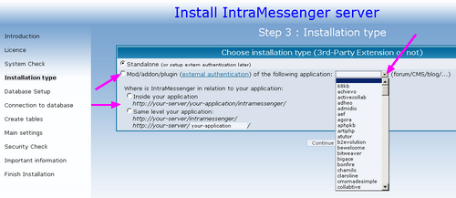
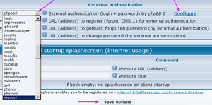
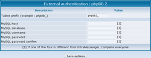
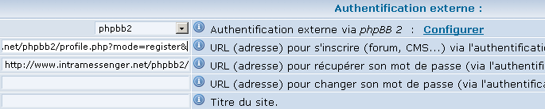

Avant propos
Vous pouvez choisir d'effectuer l'authentification (la vérification du login/pseudo et du mot de passe) depuis une source tierce (forum, CMS ou autre).
-
Si vous avez déjà un forum (ou autre), exemple : http://votredomaine/forum/
vous pouvez installer IntraMessenger au même niveau : http://votredomaine/intramessenger/
ou à l'intérieur : http://votredomaine/forum/intramessenger/.
-
Vous avez ainsi la possibilité d'autoriser l'accès à IntraMessenger uniquement aux membres inscrits à ce forum/CMS.
Il vous suffit d'effectuer les modifications indiquée ci-dessous dans IntraMessenger (rien à modifier dans le forum).
IntraMessenger ira simplement vérifier si les logins et du mot de passe sont corrects (que l'utilisateur soit connecté ou non au forum).
Lors de l'installation
-

- Choisir le type d'installation : module/AddOn/plugin.
- Choisir l'authentification (votre application).
- Préciser l'emplacement (de votre application).
Après l'installation, modifications à appliquer pour tous les types d'authentifications externes
- Modifier les options (stockées dans le fichier /common/config/config.inc.php)
- Choisir l'option spécifique (_EXTERNAL_AUTHENTICATION) :

- éventuellement : renseigner le préfixe
et les paramètres de connexion
(si un des quatre est différent d'IntraMessenger, les renseigner tous)

- renseigner l'url (adresse) pour s'inscrire (_EXTERN_URL_TO_REGISTER)
(ex: http://www.intramessenger.net/phpbb2/profile.php?mode=register&).

- renseigner l'url (adresse) pour récupérer son mot de passe oublié (_EXTERN_URL_FORGET_PASSWORD)
(ex: http://www.intramessenger.net/phpbb2/profile.php?mode=sendpassword&).
- Voir les éventuels paramètres spécifiques des chapitres ci-dessous.
- Vérifier la configuration via la page : /admin/list_options_auth_test.php
- Les options suivantes seront automatiquement modifiées :
- _USER_NEED_PASSWORD : activée
- _ALLOW_AUTO_ADD_NEW_USER_ON_SERVER : activée
- _PENDING_NEW_AUTO_ADDED_USER : désactivée
- _NEED_QUICK_REGISTER_TO_AUTO_ADD_NEW_USER : désactivée
Spécificités pour l'authentification via activeCollab
Fichier /common/config/extern.config.inc.php : indiquer le numéro de licence dans LICENSE_KEY (fourni dans config/licence.php).Spécificités pour l'authentification via Prestashop
Fichier /common/config/extern.config.inc.php : indiquer le code dans _COOKIE_KEY_ (fourni dans config/settings.inc.php).Spécificités pour l'authentification via ImpressCMS
Renseigner le fichier /common/config/extern.config.inc.php :- la valeur de SDATA_DB_SALT : dans ImpressCMS, ouvrir /mainfile.php lignes 30 (XOOPS_TRUST_PATH) : indique le chemin et ligne 32 : indique le nom du fichier à ouvrir.
- $extern_prefix : voir SDATA_DB_PREFIX (fichier ci-dessus)
Spécificités pour l'authentification via Kimai
Fichier /common/config/extern.config.inc.php : indiquer le code dans $password_salt (fourni dans kimai/includes/autoconf.php).Spécificités pour l'authentification via Oxwall
Fichier /common/config/extern.config.inc.php : indiquer le code dans OW_PASSWORD_SALT (fourni dans oxwall/ow_includes/config.php).Informations
-
Forum officiel : http://www.intramessenger.com/forum/
N'hésitez pas à venir y proposer vos améliorations et suggestions ainsi que vos traductions.
-
Support : http://www.intramessenger.net/contact.php?lang=FR&
Consulter la liste des nouveautés ainsi que la liste des prochaines améliorations (sur internet).
THeUDS © 2006 - 2015